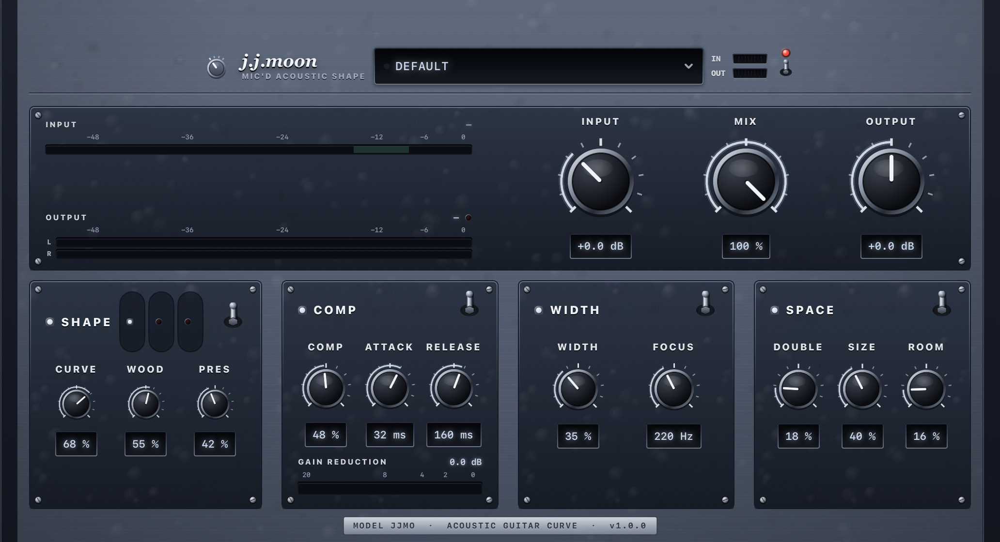
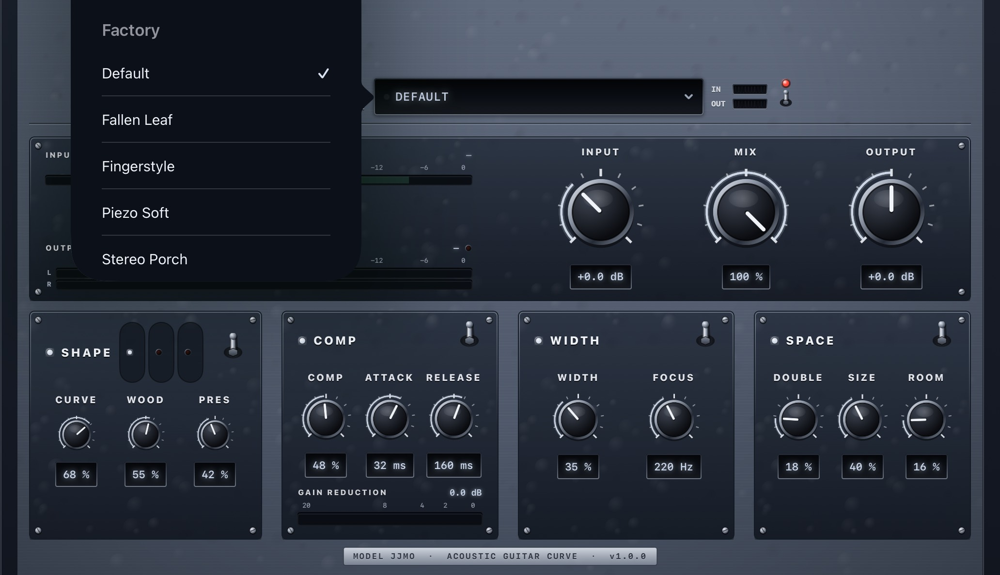
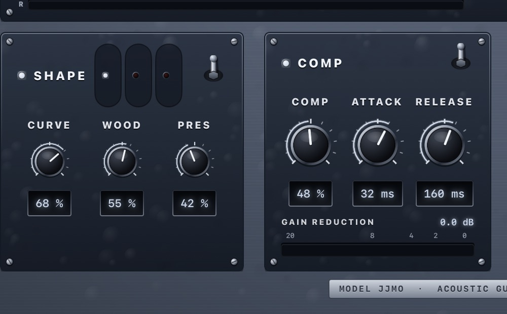

Body, air, and string detail — the shape of a well-recorded acoustic, without a rack of EQ. Soft comp, stereo width, and a quiet room around it. One insert.

Free · 7-day trial · then $2.99 once · Open the app, tap Play, then load jj-moon in your host
Great acoustic recordings share a shape: body in the low mids, smooth midrange, restrained air. jj-moon aims there — original settings, not recreations of any recording.
Curve Amount for how far you go; Wood balances body vs sparkle. Start on Fallen Leaf.
More Presence, less Wood — string definition without a piezo spike. Load Fingerstyle.
Micro-pitch width above Focus, body stays mono. Load Stereo Porch.
jj-moon is an original effect. Preset names point at a feel or a place — never at a recreation of a particular recording — and the plug-in is not affiliated with any artist, label, or third-party vendor.
Each block has its own on/off. Curve is first for a reason: it is the shape everything else sits on.
Ideal acoustic target — body, air, presence.
Optical. Soft, program-dependent release.
Micro-pitch + delay; Focus keeps the body mono.
Short double, then a soft acoustic room.
The companion app is a real host, not an empty wrapper. Hear the effect on acoustic demos before you open a DAW.
Install jj-moon and launch it once, then tap Play. Six acoustic parts are bundled (steel + nylon) — pick 1–6, or Mic for live input.
That first launch registers the Audio Unit. In GarageBand, Logic for iPad, AUM, and other AUv3 hosts it appears as jj-moon (manufacturer Gerov).
Every block has its own switch. Use Curve alone on a piezo DI, or Space alone for a little room. Knobs stay put when a block is off.
Moonlight steel and silver by default — also Slate, Field Green, or Tweed. Bakelite knobs, bat switches, smoked-glass readouts, drawn procedurally so it stays sharp at any host size. Tap a screenshot for a larger view.


A chain, not parallel sends: each block feeds the next. Master Mix puts the whole thing in parallel with dry if you want it that way.
The reason this plug-in exists. A fixed multi-band target aimed at well-mic'd acoustics — with Steel, Nylon, and Flamenco voices sharing the same knobs.
Optical compressor with program-dependent release: a light squeeze lets go quickly, a hard one crawls back — so strums get even without pumping.
Micro-pitch and short delay on the highs — the breeze stereo trick — with Focus so the body stays centred.
A short flutter double into a soft acoustic room bloom. Not a spring — just a little air around the instrument.
A bar under Comp's knobs, filling right to left. Damped-mass ballistics so it moves like a meter, not a plot.
Stereo output bars on the master strip, with peak-hold. Curve and Comp make-up can add level — watch the clip lamp.
Master Mix is dry/wet for the entire chain. Output is ±12 dB after it. Input trim (−12…+24 dB) sits first — set it before judging Comp.
Each block has its own bat switch. Bypass without wiping knobs; the power switch in the header is a full dry bypass.
Moonlight by default, plus Slate, Field Green, and Tweed. Choice is remembered per process.
Tap for factory and user presets, Save As… to keep the current knobs, swipe left to rename or delete. A dot lights when you have edited a preset.
Same recall in the panel and in the host. Save As… keeps your own next to the factory ones.
The sweet spot the curve was tuned around. Everything on, nothing extreme.
Body-forward, soft air — living-room mic feel.
Brighter string detail, moderate width.
More Wood, less Presence — tames harsh pickups.
Width pushed; curve still leading.
Intimate and dry — curve + light comp, almost no space.
More bloom around a moderate curve.
Firmer comp, more presence for flatpicked parts.
Concert voice — warmer chest, soft top.
Nylon with more Space around the body.
Nylon, high Wood, gentle Presence.
Tight body, mid-bite — rasgueado-ready.
Flamenco voice, high Presence, dry Space.
Flamenco with more room for solo lines.
Hear the target shape alone — Comp, Width and Space off.
Save As… from the preset window. User presets recall in the host too.
Preset names point at a feel or a place. They are original settings arrived at by ear, not recreations of anyone's signal chain, and jj-moon is not affiliated with any artist, label, or third-party vendor.
Install the app, open it once, then look for jj-moon in any AUv3 host. Type aufx, subtype Jjmo, manufacturer Grov.
Audio FX → Audio Unit Extensions → jj-moon. Works on an Audio Recorder track or any audio track.
Audio Units → Gerov → jj-moon. Same editor, same presets as the standalone app.
AUM, Cubasis, BeatMaker, and other AUv3 hosts list it as jj-moon. Open the companion app once if it does not appear yet.
Body, air, and string detail. The shape of a well-mic'd acoustic.
iPhone and iPad · iOS 17+ · Free download, 7-day trial, then one-time unlock. No account. Open the app, tap Play, then load the same effect in your DAW.
Download on the App Store